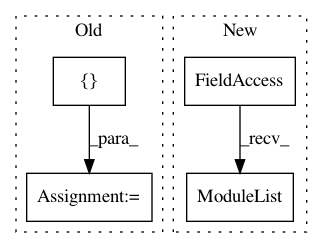

5a0f2186db97df1112073064b1ddccc7cfb84cc6,nussl/ml/networks/modules/blocks.py,DualPath,__init__,#DualPath#,786
Before Change
self.chunk_size = chunk_size
self.hop_size = hop_size
blocks = []
for i in range(num_layers):
_block = DualPathBlock(n_features=bottleneck_size, **kwargs)
blocks.append(_block)
self.add_module(f"layer{i}", _block)
After Change
self.chunk_size = chunk_size
self.hop_size = hop_size
self.layers = nn.ModuleList()
for i in range(num_layers):
_block = DualPathBlock(n_features=bottleneck_size, **kwargs)
self.layers.append(_block)
self.skip_connection = skip_connection
In pattern: SUPERPATTERN
Frequency: 3
Non-data size: 4
Instances
Project Name: interactiveaudiolab/nussl
Commit Name: 5a0f2186db97df1112073064b1ddccc7cfb84cc6
Time: 2020-08-07
Author: prem@u.northwestern.edu
File Name: nussl/ml/networks/modules/blocks.py
Class Name: DualPath
Method Name: __init__
Project Name: interactiveaudiolab/nussl
Commit Name: fb3b5ae0e06e1542d47863c71f4fff4e57d1afa5
Time: 2020-08-05
Author: prem@u.northwestern.edu
File Name: nussl/ml/networks/modules/blocks.py
Class Name: DualPath
Method Name: __init__
Project Name: erikwijmans/Pointnet2_PyTorch
Commit Name: 803d7e1fc61536c846c811bdee158bd21db36779
Time: 2017-12-26
Author: ewijmans2@gmail.com
File Name: models/Pointnet2SemSeg.py
Class Name: Pointnet2SSG
Method Name: __init__